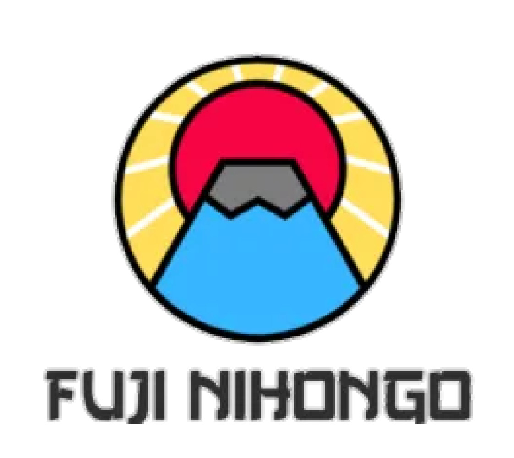

Xuất phát từ niềm đam mê với những giá trị của đất nước mặt trời mọc, Nhật ngữ Fuji Nihongo được thành lập với muốn tạo ra một môi trường học tập tiếng Nhật đột phá ngay tại Việt Nam, trở thành cầu nối giúp các bạn trẻ Việt có tiếp cận cơ hội học tập và làm việc tại Nhật Bản.
"Tiếng Nhật vì tương lai Việt" đây là kim chỉ nam giúp Fuji Nihongo luôn nổ lực để tạo ra một môi trường học tập hiện đại và đột phá hơn so với phương pháp dạy truyền thống hiện nay.Tại Fuji các học viên không những học được tiếng Nhật mà còn thẩm thấu một cách tự nhiên văn hóa và tinh thần Nhật Bản truyền cảm hứng cho học viên nỗ lực, trưởng thành hơn mỗi ngày.
Nhật ngữ Fuji Nihongo luôn nỗ lực để tạo ra một môi trường học tập hiện đại và đột phá hơn so với phương pháp dạy truyền thống hiện nay. Tại Fuji Nihongo các học viên không những học được tiếng Nhật mà còn thẩm thấu một cách tự nhiên văn hóa và tinh thần Nhật Bản truyền cảm hứng cho học viên nỗ lực, trưởng thành hơn mỗi ngày.

Lớp học được thiết kế với số lượng học viên vừa phải từ 8 - 20 học viên để có thể theo sát và hỗ trợ từng học viên một cách tốt nhất. Từ N5 đến N3 các học viên đều được học tất cả các kỹ năng nghe, nói, đọc, viết cùng KANJI học và có thể sử dụng được cũng là một trong những phương châm của Fuji Nihongo.
Đội ngũ giáo viên tại trung tâm trẻ trung, năng động với trình độ tiếng Nhật N2 và N1 cùng phương pháp dạy cuốn hút. Giáo viên đã từng có cơ hội trải nghiệm training, du học và làm việc tại Nhật. Nhờ đó, trung tâm có thể hiểu rõ được các khó khăn khi học tiếng Nhật cũng như cuộc sống và văn hóa tại Nhật như thế nào để có thể hướng dẫn và hỗ trợ học viên một cách tốt nhất. Cùng với nhân viên chăm sóc học viên, hỗ trợ học bù khi vắng học cũng như không theo kịp bài, hỗ trợ lên lớp hoặc xuống lớp tùy theo trình độ và nguyện vọng của học viên.